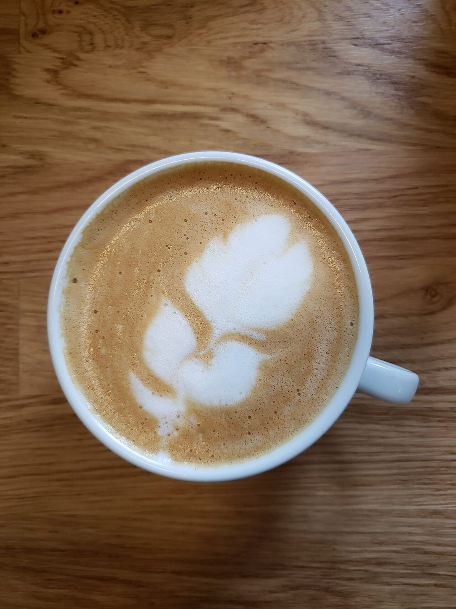

メニュー
メニュー
メニューと価格は準備中です。
備品チェック表(未記入)
引き継ぎチェック欄
下の写真はフリー素材のイメージで、お店で提供しているものを示すものではありません。チェック欄は空欄のまま、情報が確認できしだい記入します。 準備中

カップのイメージ ドリンク内容・価格: 準備中
写真はイメージです。実際の提供内容は準備中です。
カップのイメージ ドリンク内容・価格: 準備中
写真はイメージです。実際の提供内容は準備中です。
食器のイメージ フード・甘いもの内容・価格: 準備中
写真はイメージです。実際の提供内容は準備中です。
カップのイメージ その他内容・価格: 準備中
写真はイメージです。実際の提供内容は準備中です。
最新の情報はお店のInstagramをご覧ください。
Instagram @moonsun405